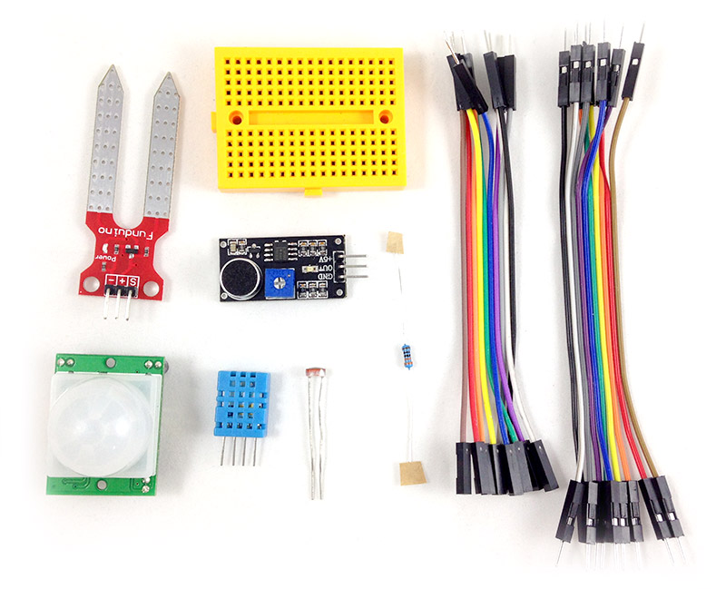

Webduino 擴充套件 S ( 支援馬克 1 號、Fly )
Webduino 擴充套件 S 是傳感器的零件組，包含了溫濕度、光敏電阻、土壤濕度偵測、人體紅外線偵測以及聲音偵測五種傳感器，透過外部資訊的接收，更能掌握環境的一切變化，搭配其他的電子零組件，就能做出像是溫度警報器、自動澆花器、大門警報器...等各種有趣的監控系統囉！
售價：
新台幣 380 元整 ( 已含稅，原價 420 元 )
產品內容：
- 1. 溫濕度 x1
- 2. 光敏電阻 x1
- 3. 土壤濕度 x1
- 4. 聲音偵測 x1
- 5. 人體紅外線偵測 x1
- 6. 電阻 x1
- 7. 170 孔麵包板 x1
- 8. 杜邦線 ( 公公 ) x10
- 9. 杜邦線 ( 公母 ) x10
產品照片：
